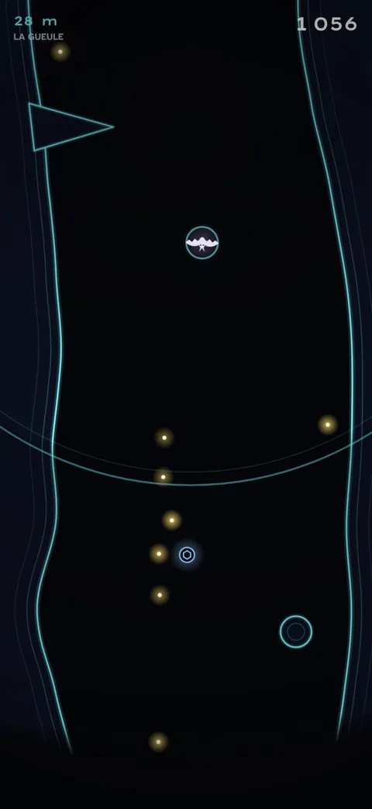
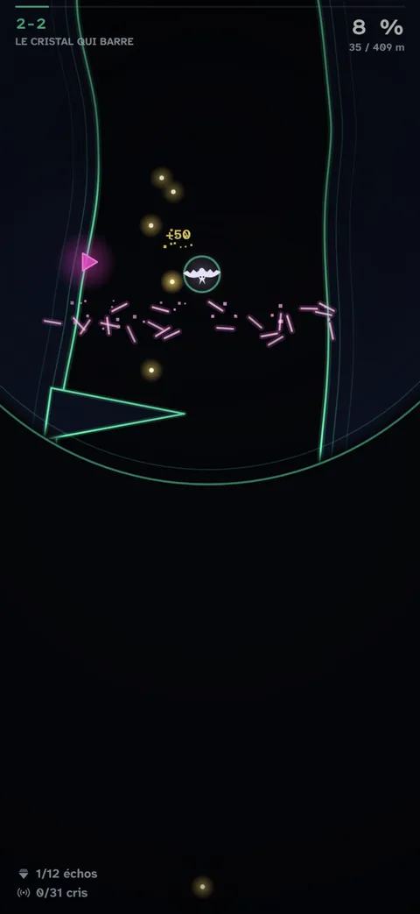
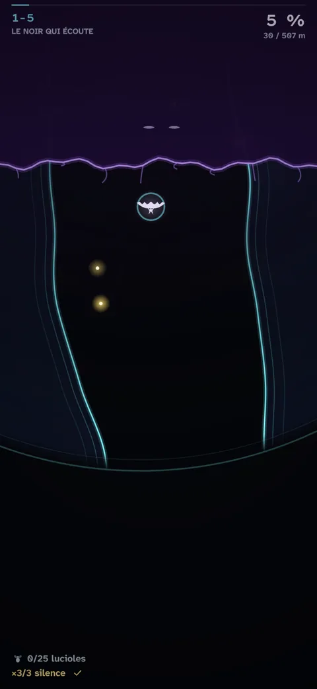
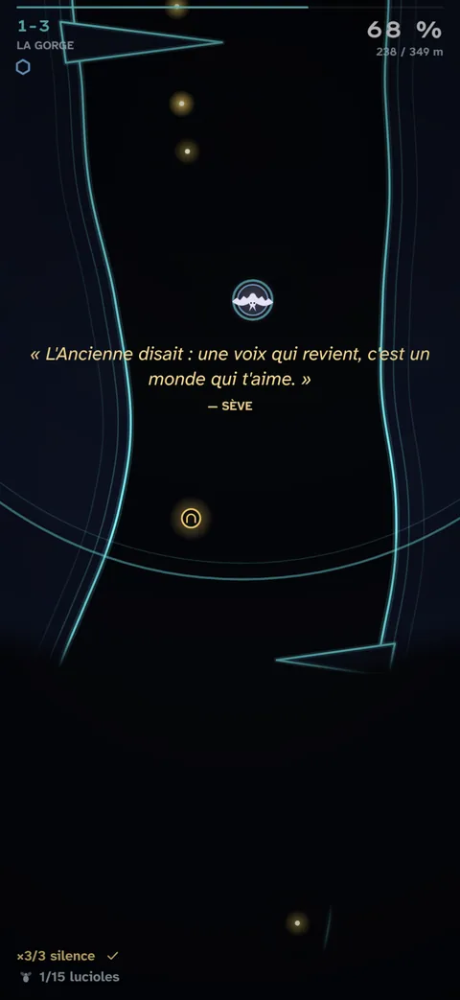
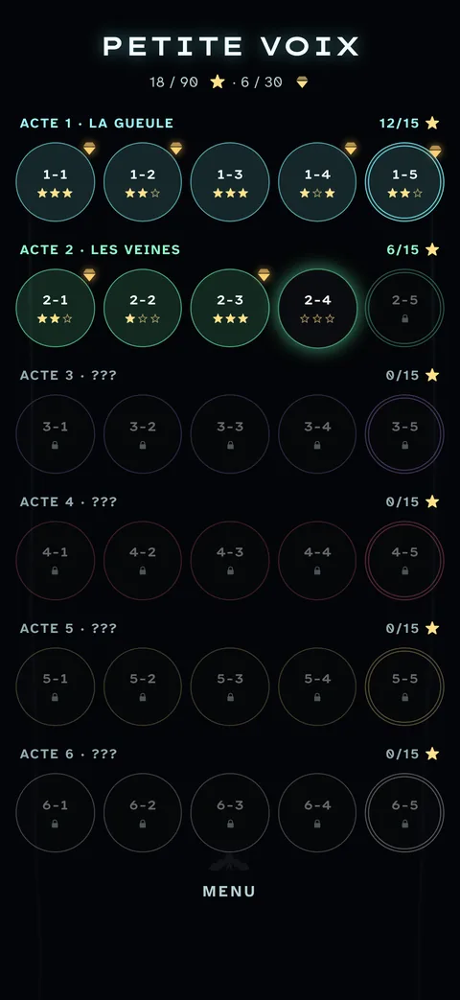
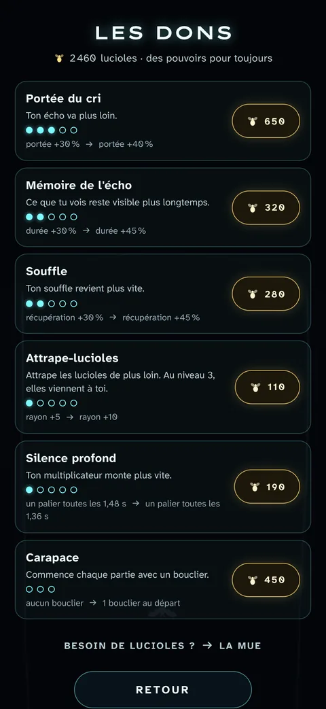

Crie pour voir. Tais-toi pour marquer.
Glisse ton doigt pour voler, lâche-le pour crier : ton écho dessine la grotte quelques secondes, puis le noir revient. À toi de te souvenir du chemin.
Plus tu restes silencieuse, plus ton multiplicateur grimpe, jusqu'à ×8. Mais tu voles à l'aveugle, et certains habitants de la grotte écoutent.

L'écho révèle les paroisQuelques secondes de lumière, puis le noir. 
Un cri fort brise le cristalLes barrières ne cèdent qu'à pleine voix. 
Le Silence te poursuitÀ la fin de chaque acte, il faut le distancer. 
Les Mémoires dorées parlent30 souvenirs cachés à retrouver. 
30 niveaux en 6 actesTrois étoiles à décrocher dans chacun. 
Des Dons pour aller plus loinTa voix porte plus loin à chaque plongée.
Une vraie histoire, du premier cri au dernier.
« Mais depuis la dernière lune, les échos ne reviennent plus. Les anciens crient… et le noir se tait. »
Descends à travers six actes pour comprendre ce qui est arrivé à la Grotte-Mère, et à ta mère. En chemin, 30 Mémoires dorées racontent ce que les autres ont tu.
- ACTE 1La Gueule
- ACTE 2Les Veines
- ACTE 3???
- ACTE 4???
- ACTE 5???
- ACTE 6???
Toujours une raison de replonger.
30 niveaux, 3 étoiles à gagner dans chacun, 30 Mémoires à retrouver, et chaque jour une grotte nouvelle, la même pour tout le monde.
Gratuit, et correct avec toi.Les pubs n'interrompent jamais une partie, ni une défaite : rien pendant le premier acte, puis au plus une de temps en temps, quand tu passes au niveau suivant après une victoire. Un achat les retire pour de bon.
À écouter autant qu'à voir.Tous les sons naissent en direct. ÉCHO a son propre thème, qui change de couleur à chaque acte et s'étoffe quand tu restes silencieux ; chacun de tes cris y ajoute une note. Avec un casque, c'est encore mieux. Jouable hors ligne.
Assistance
Ma progression a disparu.
Ta progression est enregistrée sur ton téléphone, pas sur un serveur. Désinstaller le jeu ou effacer ses données la supprime, et elle ne passe pas d'un appareil à l'autre.
Comment récupérer un achat ?
Dans La Mue, touche « Restaurer mes achats », connecté au même compte Apple ou Google que lors de l'achat.
« Sans pub » et le Pack Fondateur se restaurent. Les lucioles achetées, elles, sont consommées et ne se restaurent pas.
Je ne veux plus de publicités.
L'achat « Sans pub », ou le Pack Fondateur, retire les pubs entre les parties. Les vidéos qui offrent une récompense restent proposées, mais elles ne se lancent que si tu le choisis.
Comment changer mes choix publicitaires ?
Dans La Mue, touche « Choix publicitaires ». Ce bouton apparaît quand la loi de ta région l'exige, en Europe par exemple.
Sur iPhone, le suivi publicitaire se règle aussi dans Réglages, Confidentialité et sécurité, Suivi. Sur Android, ton identifiant publicitaire se gère dans les réglages, rubrique Annonces.
Le jeu utilise-t-il mon micro ?
Non. Le cri est un geste : tu lâches l'écran. ÉCHO n'accède ni au micro, ni à la caméra, ni à tes contacts.
Je n'entends rien.
Vérifie que le bouton SON du menu n'est pas coupé et, sur iPhone, que le mode silencieux est désactivé.
Supprimer mes données
Désinstaller le jeu efface ta progression. Pour les données liées à tes achats ou aux publicités, écris-nous : nous transmettrons la demande aux services concernés. Le détail est dans la politique de confidentialité.
Une autre question, un bug ? Écris à support@neotechmali.com en précisant le modèle de ton téléphone. Nous répondons en français.